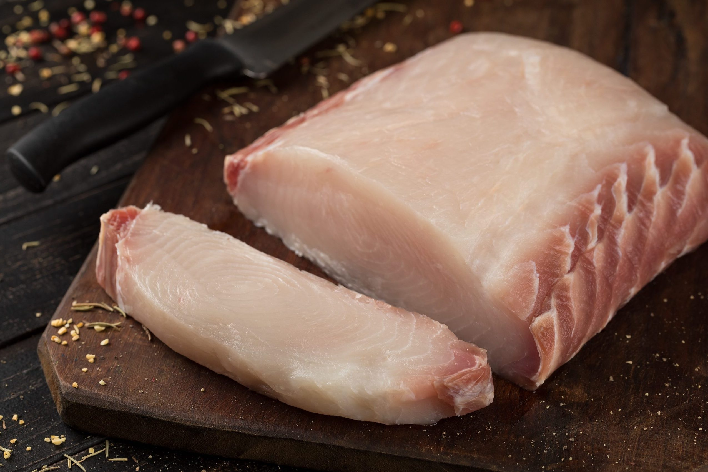
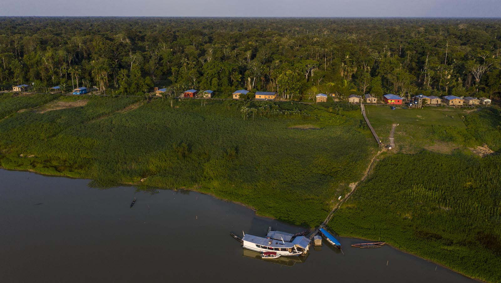

LOCAL DE ORIGEM
Este produto vem da região do Médio Juruá, no Amazonas, das áreas protegidas Reserva de Desenvolvimento Sustentável Uacari e Reserva Extrativista do Médio Juruá e da área de Acordo de Pesca de Carauari. É comercializado pela Associação dos Produtores Rurais de Carauari (ASPROC), que coordena o arranjo comercial coletivo entre áreas comunitárias produtoras no Amazonas.
- Safra 2021
- Família envolvidas
- Área de Floresta Protegida
- Crescimento de estoques de peixe
QUALIDADE

- Alimento seguro, saudável, rico em ômega 3
Produto Natural
- Natural, sem uso de rações ou aditivos químicos, autorizado pelo IBAMA- Alimento seguro, saudável, rico em ômega 3
Receitas
- Carne sem pele e sem espinha, versátil e de fácil preparoComo fazer?
Sugestões de receitas aqui!
BENEFÍCIOS SOCIOAMBIENTAIS

MARCA COLETIVA
O Gosto da Amazônia é uma marca coletiva, promovida pelo Coletivo do Pirarucu, com o objetivo de melhorar a qualidade de vida de povos e comunidades tradicionais através da comercialização de produtos socioambientais.